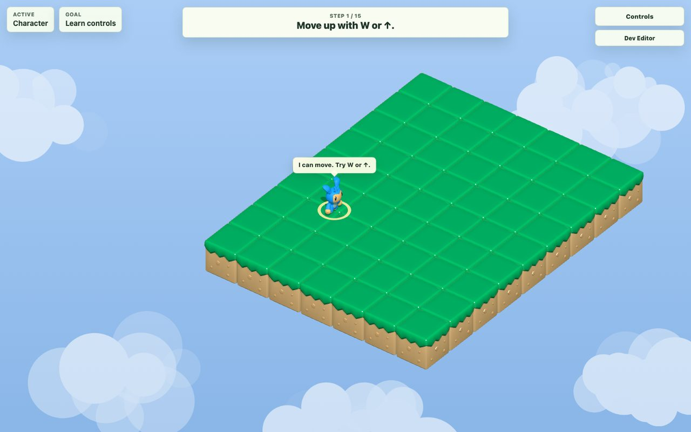
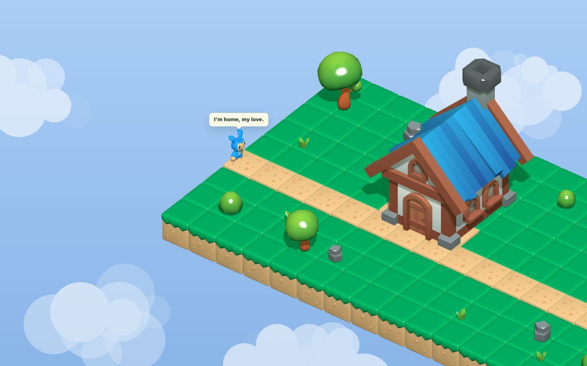
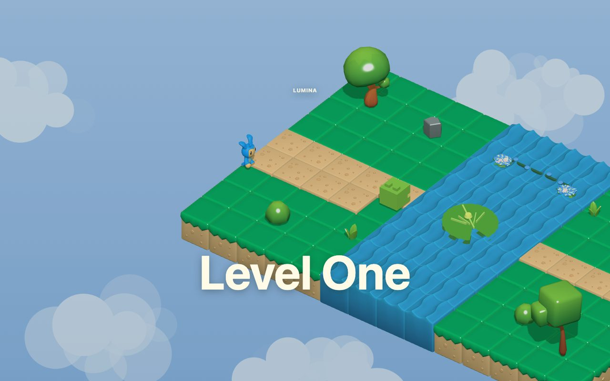
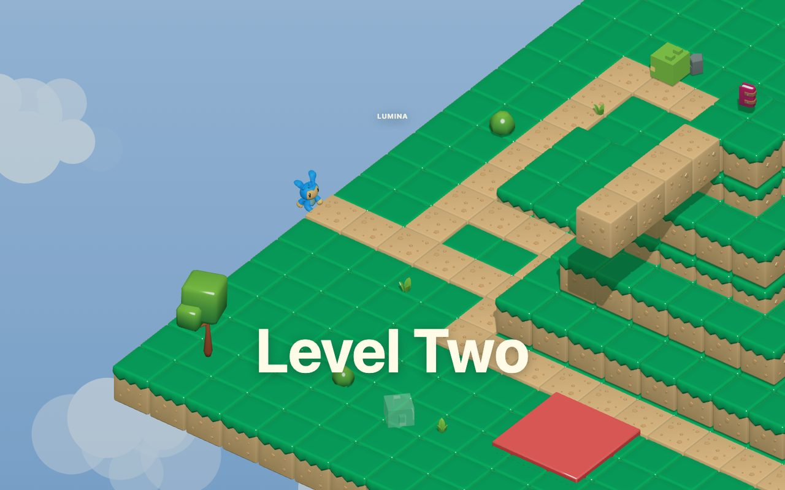
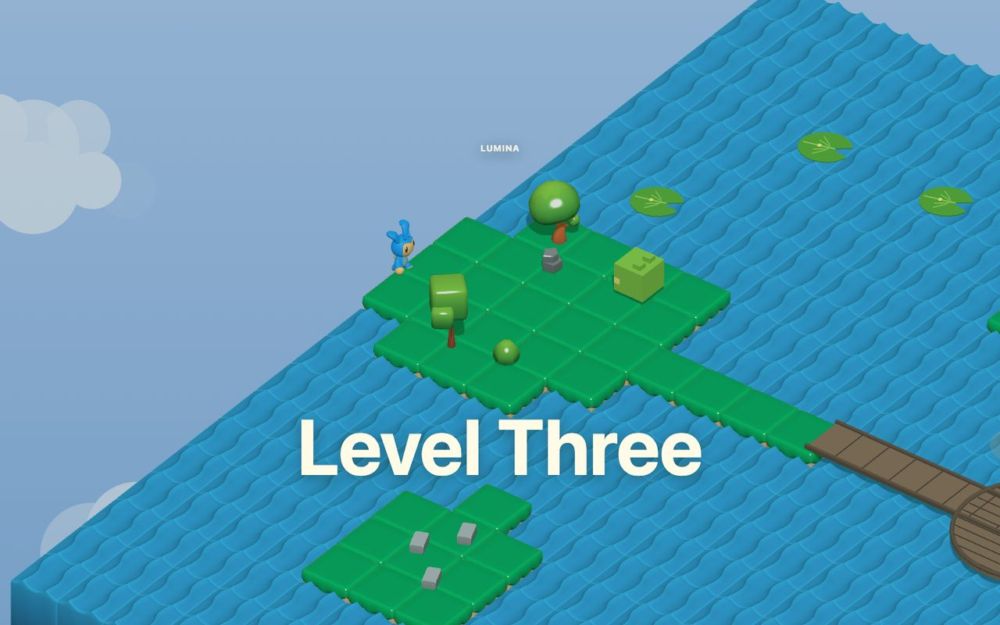
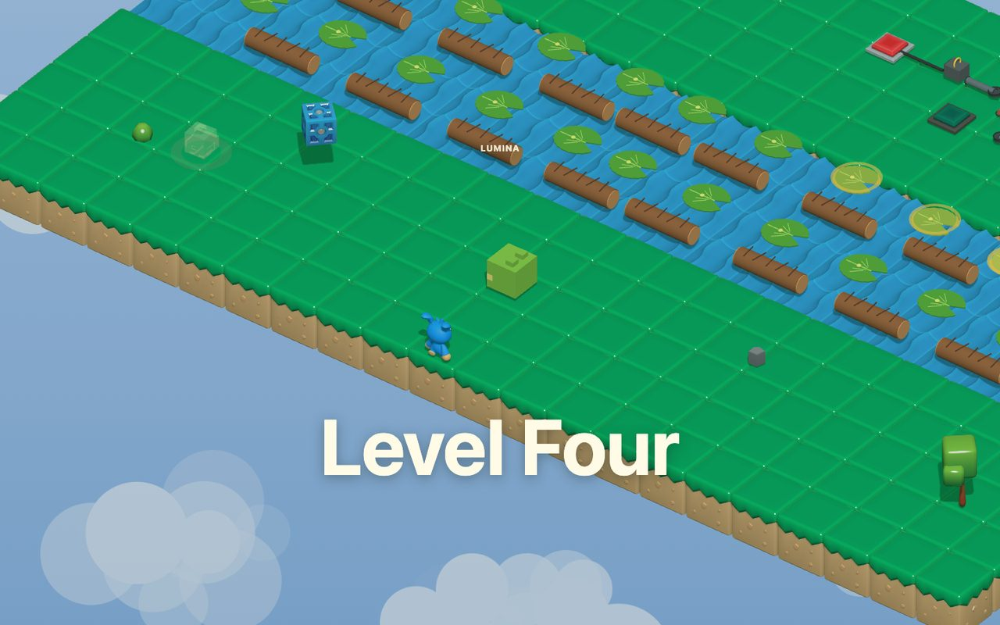
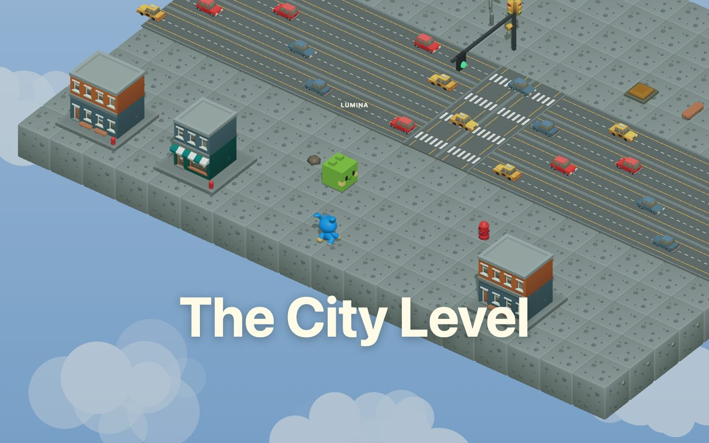

01Tutorial: the first spell is movement.
Placeholder brief: show the smallest playable moment, where the player learns to move and the world announces that this is interactive, not just a concept image.
Public WIP game landing page
A cozy magical browser-game prototype about little helpers, environmental puzzles, love-letter story beats, and the satisfying feeling of making a tiny world come alive one playable slice at a time.
First reveal
This is the public, compressed version of the attached screen recording. It gives a fast sense of motion, scale, tone, and direction. The game is still a work in progress, so the honest promise is progress with receipts, not a finished release trailer.
Second reveal
These started as numbered screenshot placeholders with capture briefs, then were replaced by real Playwright screenshots from the local dev build. Each card shows the scene, the debug key used to capture it, and the role that scene plays in the game arc.

01Placeholder brief: show the smallest playable moment, where the player learns to move and the world announces that this is interactive, not just a concept image.

02Placeholder brief: show the cozy origin point, the house, and the first emotional cue so the reader understands this project is playful and story-led.

03Placeholder brief: capture the first full level identity, with water and pathing visible enough to show how the game starts turning movement into environmental puzzles.

04Placeholder brief: show that the prototype can hold more than walking: elevation, buttons, paths, and a more structured route through a compact scene.

05Placeholder brief: show the active lake and island work, where the project is currently exploring water routes, bridge logic, and a bigger sense of travel.

06Placeholder brief: show the debug-playable river-crossing work, including moving-route ingredients and reusable component thinking starting to surface.

07Placeholder brief: use the forward-looking city scene as proof that the world is not locked to grass islands; traffic crossings and reusable challenge patterns are on the horizon.
The Tutorial, Home Intro, Level One, Level Two, and Level Three are marked as editor-supported in the current level registry. Level Three is an active lake/island lane, not a finished route.
Level Four is a debug-playable river-crossing first slice. The City Level is a debug-only provisional future Level Five candidate and reusable traffic-crossing pattern. The Portal Cinematic exists as a noninteractive story bridge between Level Four and the City shell.
Third reveal
The page should feel magical, but the project story should stay concrete. Luma 3D is a growing browser-game prototype with a visible path from first playable movement to reusable level systems.
Has been
Is now
Going next
The working rhythm is small-slice game development: define the next playable moment, add or adjust the scene and systems, run the local dev build, visually inspect the result, then record what is proven and what is still WIP.
For this Shareable update, the workflow was deliberately placeholder-first: create numbered image slots with capture intent, open the game locally, route to scenes with debug keys, capture screenshots, compress them for web, and replace the placeholders with real images.
The quality bar is not just "the HTML exists." The page needs playable media, real screenshots, public-safe language, no private local paths, no layout clipping, mobile readability, live GitHub Pages verification, and browser automation cleanup.
Fourth reveal
A nontechnical reader can stop at "it is a Three.js browser game." A technical reader can keep opening panels until the project shape becomes inspectable.
Plain English
The project separates scene IDs, level data, scene builders, runtime systems, UI, debug hooks, and documentation. That makes it possible to add a new level without turning every idea into a one-off patch in the entry file.
src/config/scenes.js names the scene IDs.src/config/levelRegistry.js maps scenes to debug keys, smoke IDs, and source files.src/levels/ stores level layout data.src/scenes/ builds scene objects and flow behavior.src/systems/ holds runtime systems such as movement, collisions, dialogue, audio, river crossing, and city traffic.Representative structure
export const SCENES = {
TUTORIAL: "tutorial",
HOME: "home_intro",
LEVEL_ONE: "level_one",
LEVEL_TWO: "level_two",
LEVEL_THREE: "level_three",
LEVEL_FOUR: "level_four",
POST_LEVEL_FOUR_PORTAL: "post_level_four_portal",
CITY_LEVEL: "city_level"
};
// The level registry connects each scene to:
// display name, debug key, catalog ID,
// smoke ID, editor support, and source files.The README's recipe is intentionally procedural: add layout constants in src/levels/newLevel.js, build logic in src/scenes/newLevelScene.js, add a scene ID, register metadata in src/config/levelRegistry.js, add catalog/tooling coverage, wire only the smallest needed runtime handoff through src/main.js, then add scene smoke coverage.
The project is moving away from one-off gameplay objects. Cubeling Echo, Totem, actor factories, traffic-crossing contracts, and river-crossing contracts live under src/components/ and companion docs. That is the path from "cool prototype" to "world that can keep growing."
The repo currently has active WIP changes. This Shareable treats the game repo as runtime and evidence, not as a polished release branch. The page links to the public source trail and keeps caveats visible instead of implying a finished game.
Fifth reveal
The useful public lesson is the workflow pattern: ask for a playable slice, require proof, protect WIP truth, and make the artifact explain itself at more than one depth level.
Prompts framed the next slice as something visible: a route, a helper, a bridge, a crossing, a level identity, or a story beat.
The workflow pushed for screenshots, smoke checks, browser validation, and repo evidence before saying the work was shareable.
This Shareable uses sanitized prompt patterns and progressive disclosure so the reader can learn the method without seeing private chat logs.
Pattern: create numbered placeholders first, name what each image should prove, then replace each slot only after capturing the actual running game. That keeps the page from becoming decorative. Every image has a job.
Representative process details are public; raw private transcripts, secrets, local machine paths, and unreviewed personal material are not. The page uses relative repo paths and public GitHub links where a reader needs proof.
Final reveal
The useful public posture is simple: Luma 3D is real, visible, and growing. It is not yet a finished playable release.
Public source trail for the browser-game prototype.
Browser-native runtime with local development and smoke tooling.
Temporary QA shortcuts, not final player-facing UI.
Portfolio/process visibility with release caveats.
Harden routes and complete asset attribution before stronger launch claims.